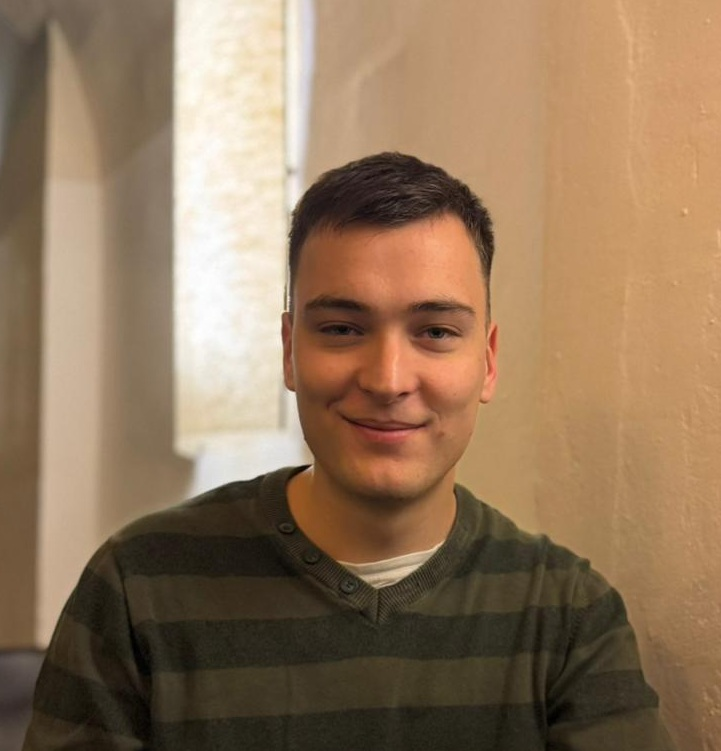
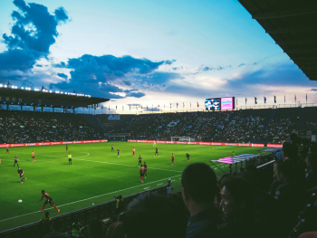
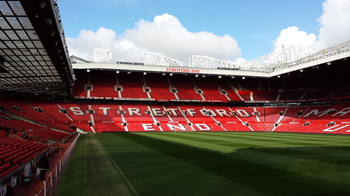
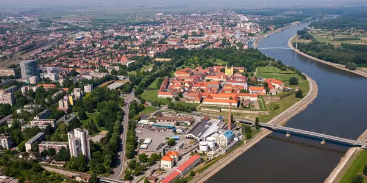

Tko smo mi
Saznajte više o našem obrazovanju, vještinama i iskustvu. Kliknite na karticu za detalje.
Učitavanje podataka...
Klikni na sliku za prikaz u punoj rezoluciji. Stranica sadrži slike u formatima .jpg, .png, .gif, .bmp i .tif.



Kratki isječci o mjestima stanovanja, fakultetu ili aktivnostima.
Ova web stranica izrađena je u sklopu kolegija Multimedijska tehnika na Fakultetu elektrotehnike, računarstva i informacijskih tehnologija Osijek (FERIT), u sastavu Sveučilišta Josipa Jurja Strossmayera u Osijeku, akademske godine 2025./2026.